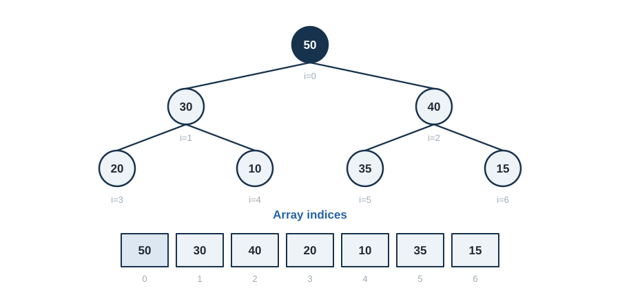

3 Data Structures for Efficiency
When Algorithms Meet Architecture
“Bad programmers worry about the code. Good programmers worry about data structures and their relationships.” - Linus Torvalds
3.1 Heaps and Priority Queues
3.1.1 The Priority Queue ADT
A priority queue is like a hospital emergency room—patients aren’t served first-come-first-serve, but by urgency. The sickest patient gets treated first, regardless of arrival time.
Abstract Operations:
insert(item, priority): Add item with given priorityextract_max(): Remove and return highest priority itempeek(): View highest priority without removingis_empty(): Check if queue is empty
Applications Everywhere:
- Dijkstra’s Algorithm: Next vertex to explore
- Huffman Coding: Building optimal codes
- Event Simulation: Next event to process
- OS Scheduling: Next process to run
- Machine Learning: Beam search, best-first search
3.1.2 The Binary Heap Structure
A binary heap is a complete binary tree with the heap property:
- Max Heap: Parent ≥ all children
- Min Heap: Parent ≤ all children
Key Insight: We can represent a complete binary tree as an array!

For array index \(i\), the parent is \((i-1)\mathbin{//}2\), the left child is \(2i+1\), and the right child is \(2i+2\).
3.1.3 Core Heap Operations
class MaxHeap:
"""
Efficient binary max-heap implementation.
Complexities:
- insert: O(log n)
- extract_max: O(log n)
- peek: O(1)
- build_heap: O(n) - surprisingly!
"""
def __init__(self, items=None):
"""Initialize heap, optionally building from items."""
self.heap = []
if items:
self.heap = list(items)
self._build_heap()
def _parent(self, i):
"""Get parent index."""
return (i - 1) // 2
def _left_child(self, i):
"""Get left child index."""
return 2 * i + 1
def _right_child(self, i):
"""Get right child index."""
return 2 * i + 2
def _swap(self, i, j):
"""Swap elements at indices i and j."""
self.heap[i], self.heap[j] = self.heap[j], self.heap[i]
def _sift_up(self, i):
"""
Restore heap property by moving element up.
Used after insertion.
"""
parent = self._parent(i)
# Keep swapping with parent while larger
if i > 0 and self.heap[i] > self.heap[parent]:
self._swap(i, parent)
self._sift_up(parent)
def _sift_down(self, i):
"""
Restore heap property by moving element down.
Used after extraction.
"""
max_index = i
left = self._left_child(i)
right = self._right_child(i)
# Find largest among parent, left child, right child
if left < len(self.heap) and self.heap[left] > self.heap[max_index]:
max_index = left
if right < len(self.heap) and self.heap[right] > self.heap[max_index]:
max_index = right
# Swap with largest child if needed
if i != max_index:
self._swap(i, max_index)
self._sift_down(max_index)
def insert(self, item):
"""
Add item to heap.
Time: O(log n)
"""
self.heap.append(item)
self._sift_up(len(self.heap) - 1)
def extract_max(self):
"""
Remove and return maximum element.
Time: O(log n)
"""
if not self.heap:
raise IndexError("Heap is empty")
max_val = self.heap[0]
# Move last element to root and sift down
self.heap[0] = self.heap[-1]
self.heap.pop()
if self.heap:
self._sift_down(0)
return max_val
def peek(self):
"""
View maximum without removing.
Time: O(1)
"""
if not self.heap:
raise IndexError("Heap is empty")
return self.heap[0]
def _build_heap(self):
"""
Convert array into heap in-place.
Time: O(n) - not O(n log n)!
"""
# Start from last non-leaf node
for i in range(len(self.heap) // 2 - 1, -1, -1):
self._sift_down(i)3.1.4 The Magic of \(O(n)\) Heap Construction
Why is build_heap \(O(n)\) and not \(O(n log n)\)?
Key Insight: Most nodes are near the bottom!
- Level 0 (root): 1 node, sifts down h times
- Level 1: 2 nodes, sift down h-1 times
- Level 2: 4 nodes, sift down h-2 times
- …
- Level h-1: 2^(h-1) nodes, sift down 1 time
- Level h (leaves): 2^h nodes, sift down 0 times
Total work:
\[ \begin{aligned} W &=\sum_{i=0}^{h}2^i(h-i) \\ &=2^h\sum_{i=0}^{h}\frac{h-i}{2^{h-i}} \\ &=2^h\sum_{j=0}^{h}\frac{j}{2^j} \\ &\le 2^h\cdot2 \\ &=2n \\ &=O(n). \end{aligned} \tag{3.1}\]
Here \(h\) is the heap height and \(W\) is the total sift-down work. The final bound uses \(\sum_{j\ge0}j/2^j=2\) and \(2^h\le n\) up to a constant factor, which explains why bottom-up heap construction is linear even though one individual sift can take \(O(\log n)\) time.
3.1.5 Advanced Heap Operations
class IndexedMaxHeap(MaxHeap):
"""
Heap with ability to update priorities of existing items.
Essential for Dijkstra's algorithm and similar applications.
"""
def __init__(self):
super().__init__()
self.item_to_index = {} # Maps items to their heap indices
def _swap(self, i, j):
"""Override to maintain index mapping."""
# Update mappings
self.item_to_index[self.heap[i]] = j
self.item_to_index[self.heap[j]] = i
# Swap items
super()._swap(i, j)
def insert(self, item, priority):
"""Insert with explicit priority."""
if item in self.item_to_index:
self.update_priority(item, priority)
else:
self.heap.append((priority, item))
self.item_to_index[item] = len(self.heap) - 1
self._sift_up(len(self.heap) - 1)
def update_priority(self, item, new_priority):
"""
Change priority of existing item.
Time: O(log n)
"""
if item not in self.item_to_index:
raise KeyError(f"Item {item} not in heap")
i = self.item_to_index[item]
old_priority = self.heap[i][0]
self.heap[i] = (new_priority, item)
# Restore heap property
if new_priority > old_priority:
self._sift_up(i)
else:
self._sift_down(i)
def extract_max(self):
"""Remove max and update mappings."""
if not self.heap:
raise IndexError("Heap is empty")
max_item = self.heap[0][1]
del self.item_to_index[max_item]
if len(self.heap) > 1:
# Move last to front
self.heap[0] = self.heap[-1]
self.item_to_index[self.heap[0][1]] = 0
self.heap.pop()
self._sift_down(0)
else:
self.heap.pop()
return max_item3.1.6 Heap Applications
3.1.6.1 Application 1: K Largest Elements
def k_largest_elements(arr, k):
"""
Find k largest elements in array.
Time: O(n + k log n) using max heap
Alternative: O(n log k) using min heap of size k
"""
if k <= 0:
return []
if k >= len(arr):
return sorted(arr, reverse=True)
# Build max heap - O(n)
heap = MaxHeap(arr)
# Extract k largest - O(k log n)
result = []
for _ in range(k):
result.append(heap.extract_max())
return result
def k_largest_streaming(stream, k):
"""
Maintain k largest from stream using min heap.
More memory efficient for large streams.
Time: O(n log k)
Space: O(k)
"""
import heapq
min_heap = []
for item in stream:
if len(min_heap) < k:
heapq.heappush(min_heap, item)
elif item > min_heap[0]:
heapq.heapreplace(min_heap, item)
return sorted(min_heap, reverse=True)3.1.6.2 Application 2: Median Maintenance
class MedianFinder:
"""
Find median of stream in O(log n) per insertion.
Uses two heaps: max heap for smaller half, min heap for larger half.
"""
def __init__(self):
self.small = MaxHeap() # Smaller half (max heap)
self.large = [] # Larger half (min heap using heapq)
def add_number(self, num):
"""
Add number maintaining median property.
Time: O(log n)
"""
import heapq
# Add to small heap first
self.small.insert(num)
# Move largest from small to large
if self.small.heap:
moved = self.small.extract_max()
heapq.heappush(self.large, moved)
# Balance heaps (small can have at most 1 more than large)
if len(self.large) > len(self.small.heap):
moved = heapq.heappop(self.large)
self.small.insert(moved)
def find_median(self):
"""
Get current median.
Time: O(1)
"""
if len(self.small.heap) > len(self.large):
return float(self.small.peek())
return (self.small.peek() + self.large[0]) / 2.03.2 Balanced Binary Search Trees
3.2.1 The Balance Problem
Binary Search Trees (BSTs) give us \(O(log n)\) operations… if balanced. But what if they’re not?
Worst case - degenerate tree (linked list):
Insert: 1, 2, 3, 4, 5
1
\
2
\
3
\
4
\
5
Height = n-1
All operations: O(n) 😢Best case - perfectly balanced:
3
/ \
2 4
/ \
1 5
Height = log n
All operations: O(log n) 😊3.2.2 AVL Trees: The First Balanced BST
Named after Adelson-Velsky and Landis (1962), AVL trees maintain strict balance.
AVL Property: For every node, heights of left and right subtrees differ by at most 1.
Balance Factor: BF(node) = height(left) - height(right) ∈ {-1, 0, 1}
3.2.3 AVL Tree Implementation
class AVLNode:
"""Node in an AVL tree."""
def __init__(self, key, value=None):
self.key = key
self.value = value
self.left = None
self.right = None
self.height = 0
def update_height(self):
"""Recalculate height based on children."""
left_height = self.left.height if self.left else -1
right_height = self.right.height if self.right else -1
self.height = 1 + max(left_height, right_height)
def balance_factor(self):
"""Get balance factor of node."""
left_height = self.left.height if self.left else -1
right_height = self.right.height if self.right else -1
return left_height - right_height
class AVLTree:
"""
Self-balancing binary search tree.
Guarantees:
- Height: O(log n)
- Insert: O(log n)
- Delete: O(log n)
- Search: O(log n)
"""
def __init__(self):
self.root = None
self.size = 0
def insert(self, key, value=None):
"""Insert key-value pair maintaining AVL property."""
self.root = self._insert_recursive(self.root, key, value)
self.size += 1
def _insert_recursive(self, node, key, value):
"""Recursively insert and rebalance."""
# Standard BST insertion
if not node:
return AVLNode(key, value)
if key < node.key:
node.left = self._insert_recursive(node.left, key, value)
elif key > node.key:
node.right = self._insert_recursive(node.right, key, value)
else:
# Duplicate key - update value
node.value = value
self.size -= 1 # Don't increment size for update
return node
# Update height
node.update_height()
# Rebalance if needed
return self._rebalance(node)
def _rebalance(self, node):
"""
Restore AVL property through rotations.
Four cases: LL, RR, LR, RL
"""
balance = node.balance_factor()
# Left heavy
if balance > 1:
# Left-Right case
if node.left.balance_factor() < 0:
node.left = self._rotate_left(node.left)
# Left-Left case
return self._rotate_right(node)
# Right heavy
if balance < -1:
# Right-Left case
if node.right.balance_factor() > 0:
node.right = self._rotate_right(node.right)
# Right-Right case
return self._rotate_left(node)
return node
def _rotate_right(self, y):
"""
Right rotation around y.
y x
/ \ / \
x C --> A y
/ \ / \
A B B C
"""
x = y.left
B = x.right
# Perform rotation
x.right = y
y.left = B
# Update heights
y.update_height()
x.update_height()
return x
def _rotate_left(self, x):
"""
Left rotation around x.
x y
/ \ / \
A y --> x C
/ \ / \
B C A B
"""
y = x.right
B = y.left
# Perform rotation
y.left = x
x.right = B
# Update heights
x.update_height()
y.update_height()
return y
def search(self, key):
"""
Find value associated with key.
Time: O(log n) guaranteed
"""
node = self.root
while node:
if key == node.key:
return node.value
elif key < node.key:
node = node.left
else:
node = node.right
return None
def delete(self, key):
"""Delete key from tree maintaining balance."""
self.root = self._delete_recursive(self.root, key)
def _delete_recursive(self, node, key):
"""Recursively delete and rebalance."""
if not node:
return None
if key < node.key:
node.left = self._delete_recursive(node.left, key)
elif key > node.key:
node.right = self._delete_recursive(node.right, key)
else:
# Found node to delete
self.size -= 1
# Case 1: Leaf node
if not node.left and not node.right:
return None
# Case 2: One child
if not node.left:
return node.right
if not node.right:
return node.left
# Case 3: Two children
# Replace with inorder successor
successor = self._find_min(node.right)
node.key = successor.key
node.value = successor.value
node.right = self._delete_recursive(node.right, successor.key)
# Update height and rebalance
node.update_height()
return self._rebalance(node)
def _find_min(self, node):
"""Find minimum node in subtree."""
while node.left:
node = node.left
return node3.2.4 Red-Black Trees: A Different Balance
Red-Black trees use coloring instead of strict height balance.
Properties:
- Every node is either RED or BLACK
- Root is BLACK
- Leaves (NIL) are BLACK
- RED nodes have BLACK children (no consecutive reds)
- Every path from root to leaf has the same number of BLACK nodes
Result: Height ≤ 2 log(n+1)
AVL vs Red-Black Trade-off:
- AVL: Stricter balance → faster search (1.44 log n height)
- Red-Black: Looser balance → faster insert/delete (fewer rotations)
class RedBlackNode:
"""Node in a Red-Black tree."""
def __init__(self, key, value=None, color='RED'):
self.key = key
self.value = value
self.color = color # 'RED' or 'BLACK'
self.left = None
self.right = None
self.parent = None
class RedBlackTree:
"""
Red-Black tree implementation.
Compared to AVL:
- Insertion: Fewer rotations (max 2)
- Deletion: Fewer rotations (max 3)
- Search: Slightly slower (height up to 2 log n)
- Used in: C++ STL map, Java TreeMap, Linux kernel
"""
def __init__(self):
self.nil = RedBlackNode(None, color='BLACK') # Sentinel
self.root = self.nil
def insert(self, key, value=None):
"""Insert maintaining Red-Black properties."""
# Standard BST insertion
new_node = RedBlackNode(key, value, 'RED')
new_node.left = self.nil
new_node.right = self.nil
parent = None
current = self.root
while current != self.nil:
parent = current
if key < current.key:
current = current.left
elif key > current.key:
current = current.right
else:
# Update existing
current.value = value
return
new_node.parent = parent
if parent is None:
self.root = new_node
elif key < parent.key:
parent.left = new_node
else:
parent.right = new_node
# Fix violations
self._insert_fixup(new_node)
def _insert_fixup(self, node):
"""
Restore Red-Black properties after insertion.
At most 2 rotations needed.
"""
while node.parent and node.parent.color == 'RED':
if node.parent == node.parent.parent.left:
uncle = node.parent.parent.right
if uncle.color == 'RED':
# Case 1: Uncle is red - recolor
node.parent.color = 'BLACK'
uncle.color = 'BLACK'
node.parent.parent.color = 'RED'
node = node.parent.parent
else:
# Case 2: Uncle is black, node is right child
if node == node.parent.right:
node = node.parent
self._rotate_left(node)
# Case 3: Uncle is black, node is left child
node.parent.color = 'BLACK'
node.parent.parent.color = 'RED'
self._rotate_right(node.parent.parent)
else:
# Mirror cases for right subtree
uncle = node.parent.parent.left
if uncle.color == 'RED':
node.parent.color = 'BLACK'
uncle.color = 'BLACK'
node.parent.parent.color = 'RED'
node = node.parent.parent
else:
if node == node.parent.left:
node = node.parent
self._rotate_right(node)
node.parent.color = 'BLACK'
node.parent.parent.color = 'RED'
self._rotate_left(node.parent.parent)
self.root.color = 'BLACK'
def _rotate_left(self, x):
"""Left rotation preserving parent pointers."""
y = x.right
x.right = y.left
if y.left != self.nil:
y.left.parent = x
y.parent = x.parent
if x.parent is None:
self.root = y
elif x == x.parent.left:
x.parent.left = y
else:
x.parent.right = y
y.left = x
x.parent = y
def _rotate_right(self, y):
"""Right rotation preserving parent pointers."""
x = y.left
y.left = x.right
if x.right != self.nil:
x.right.parent = y
x.parent = y.parent
if y.parent is None:
self.root = x
elif y == y.parent.right:
y.parent.right = x
else:
y.parent.left = x
x.right = y
y.parent = x3.3 Hash Tables - \(O(1)\) Average Case Magic
3.3.1 The Dream of Constant Time
Hash tables achieve something seemingly impossible: \(O(1)\) average-case lookup, insert, and delete for arbitrary keys.
The address formula:
\[ \operatorname{address}(k)=h(k)\bmod m, \]
where \(h\) is the hash function and \(m\) is the table size.
3.3.2 Hash Function Design
A good hash function has three properties:
- Deterministic: Same input → same output
- Uniform: Distributes keys evenly
- Fast: \(O(1)\) computation
class HashTable:
"""
Hash table with chaining collision resolution.
Average case: O(1) for all operations
Worst case: O(n) if all keys hash to same bucket
"""
def __init__(self, initial_capacity=16, max_load_factor=0.75):
"""
Initialize hash table.
Args:
initial_capacity: Starting size
max_load_factor: Threshold for resizing
"""
self.capacity = initial_capacity
self.size = 0
self.max_load_factor = max_load_factor
self.buckets = [[] for _ in range(self.capacity)]
self.hash_function = self._polynomial_rolling_hash
def _simple_hash(self, key):
"""
Simple hash for integer keys.
Uses multiplication method.
"""
A = 0.6180339887 # (√5 - 1) / 2 - golden ratio
return int(self.capacity * ((key * A) % 1))
def _polynomial_rolling_hash(self, key):
"""
Polynomial rolling hash for strings.
Good distribution, used by Java's String.hashCode().
"""
if isinstance(key, int):
return self._simple_hash(key)
hash_value = 0
for char in str(key):
hash_value = (hash_value * 31 + ord(char)) % (2**32)
return hash_value % self.capacity
def _universal_hash(self, key):
"""
Universal hashing - randomly selected from family.
Provides theoretical guarantees.
"""
# For integers: h(k) = ((a*k + b) mod p) mod m
# where p is prime > universe size
# a, b randomly chosen from [0, p-1]
p = 2**31 - 1 # Large prime
a = 1103515245 # From linear congruential generator
b = 12345
if isinstance(key, str):
key = sum(ord(c) * (31**i) for i, c in enumerate(key))
return ((a * key + b) % p) % self.capacity
def insert(self, key, value):
"""
Insert key-value pair.
Average: O(1), Worst: O(n)
"""
index = self.hash_function(key)
bucket = self.buckets[index]
# Check if key exists
for i, (k, v) in enumerate(bucket):
if k == key:
bucket[i] = (key, value) # Update
return
# Add new key-value pair
bucket.append((key, value))
self.size += 1
# Resize if load factor exceeded
if self.size > self.capacity * self.max_load_factor:
self._resize()
def get(self, key):
"""
Retrieve value for key.
Average: O(1), Worst: O(n)
"""
index = self.hash_function(key)
bucket = self.buckets[index]
for k, v in bucket:
if k == key:
return v
raise KeyError(f"Key '{key}' not found")
def delete(self, key):
"""
Remove key-value pair.
Average: O(1), Worst: O(n)
"""
index = self.hash_function(key)
bucket = self.buckets[index]
for i, (k, v) in enumerate(bucket):
if k == key:
del bucket[i]
self.size -= 1
return
raise KeyError(f"Key '{key}' not found")
def _resize(self):
"""
Double table size and rehash all entries.
Amortized O(1) due to geometric growth.
"""
old_buckets = self.buckets
self.capacity *= 2
self.size = 0
self.buckets = [[] for _ in range(self.capacity)]
# Rehash all entries
for bucket in old_buckets:
for key, value in bucket:
self.insert(key, value)3.3.3 Collision Resolution Strategies
3.3.3.1 Strategy 1: Separate Chaining
Each bucket is a linked list (or dynamic array).
Pros:
- Simple to implement
- Handles high load factors well
- Deletion is straightforward
Cons:
- Extra memory for pointers
- Cache unfriendly (pointer chasing)
3.3.3.2 Strategy 2: Open Addressing
All entries stored in table itself.
class OpenAddressHashTable:
"""
Hash table using open addressing (linear probing).
Better cache performance than chaining.
"""
def __init__(self, initial_capacity=16):
self.capacity = initial_capacity
self.keys = [None] * self.capacity
self.values = [None] * self.capacity
self.deleted = [False] * self.capacity # Tombstones
self.size = 0
def _hash(self, key, attempt=0):
"""
Linear probing: h(k, i) = (h(k) + i) mod m
Other strategies:
- Quadratic: h(k, i) = (h(k) + c1*i + c2*i²) mod m
- Double hashing: h(k, i) = (h1(k) + i*h2(k)) mod m
"""
base_hash = hash(key) % self.capacity
return (base_hash + attempt) % self.capacity
def insert(self, key, value):
"""Insert with linear probing."""
attempt = 0
while attempt < self.capacity:
index = self._hash(key, attempt)
if self.keys[index] is None or self.deleted[index] or self.keys[index] == key:
if self.keys[index] != key:
self.size += 1
self.keys[index] = key
self.values[index] = value
self.deleted[index] = False
if self.size > self.capacity * 0.5: # Lower threshold for open addressing
self._resize()
return
attempt += 1
raise Exception("Hash table full")
def get(self, key):
"""Search with linear probing."""
attempt = 0
while attempt < self.capacity:
index = self._hash(key, attempt)
if self.keys[index] is None and not self.deleted[index]:
raise KeyError(f"Key '{key}' not found")
if self.keys[index] == key and not self.deleted[index]:
return self.values[index]
attempt += 1
raise KeyError(f"Key '{key}' not found")
def delete(self, key):
"""Delete using tombstones."""
attempt = 0
while attempt < self.capacity:
index = self._hash(key, attempt)
if self.keys[index] is None and not self.deleted[index]:
raise KeyError(f"Key '{key}' not found")
if self.keys[index] == key and not self.deleted[index]:
self.deleted[index] = True # Tombstone
self.size -= 1
return
attempt += 1
raise KeyError(f"Key '{key}' not found")3.3.4 Advanced Hashing Techniques
3.3.4.1 Cuckoo Hashing - Worst-Case \(O(1)\) Lookup
class CuckooHashTable:
"""
Cuckoo hashing: Two hash functions, guaranteed O(1) worst case lookup.
If collision, kick out existing element to its alternative location.
"""
def __init__(self, capacity=16):
self.capacity = capacity
self.table1 = [None] * capacity
self.table2 = [None] * capacity
self.size = 0
self.max_kicks = int(6 * math.log(capacity)) # Threshold before resize
def _hash1(self, key):
"""First hash function."""
return hash(key) % self.capacity
def _hash2(self, key):
"""Second hash function (independent)."""
return (hash(str(key) + "salt") % self.capacity)
def insert(self, key, value):
"""
Insert with cuckoo hashing.
Expected amortized O(1) under standard hashing assumptions;
an individual insertion or rebuild can take O(n).
"""
if self.search(key) is not None:
# Update existing
return
# Try to insert, kicking out elements if needed
current_key = key
current_value = value
for _ in range(self.max_kicks):
# Try table 1
pos1 = self._hash1(current_key)
if self.table1[pos1] is None:
self.table1[pos1] = (current_key, current_value)
self.size += 1
return
# Kick out from table 1
self.table1[pos1], (current_key, current_value) = \
(current_key, current_value), self.table1[pos1]
# Try table 2
pos2 = self._hash2(current_key)
if self.table2[pos2] is None:
self.table2[pos2] = (current_key, current_value)
self.size += 1
return
# Kick out from table 2
self.table2[pos2], (current_key, current_value) = \
(current_key, current_value), self.table2[pos2]
# Cycle detected - need to rehash
self._rehash()
self.insert(key, value)
def search(self, key):
"""
Lookup in constant time - check 2 locations only.
Worst case: O(1)
"""
pos1 = self._hash1(key)
if self.table1[pos1] and self.table1[pos1][0] == key:
return self.table1[pos1][1]
pos2 = self._hash2(key)
if self.table2[pos2] and self.table2[pos2][0] == key:
return self.table2[pos2][1]
return None3.3.4.2 Consistent Hashing - Distributed Systems
class ConsistentHash:
"""
Consistent hashing for distributed systems.
Minimizes remapping when nodes are added/removed.
Used in: Cassandra, DynamoDB, Memcached
"""
def __init__(self, nodes=None, virtual_nodes=150):
"""
Initialize with virtual nodes for better distribution.
Args:
nodes: Initial server nodes
virtual_nodes: Replicas per physical node
"""
self.nodes = nodes or []
self.virtual_nodes = virtual_nodes
self.ring = {} # Hash -> node mapping
for node in self.nodes:
self._add_node(node)
def _hash(self, key):
"""Generate hash for key."""
import hashlib
return int(hashlib.md5(key.encode()).hexdigest(), 16)
def _add_node(self, node):
"""Add node with virtual replicas to ring."""
for i in range(self.virtual_nodes):
virtual_key = f"{node}:{i}"
hash_value = self._hash(virtual_key)
self.ring[hash_value] = node
def remove_node(self, node):
"""Remove node from ring."""
for i in range(self.virtual_nodes):
virtual_key = f"{node}:{i}"
hash_value = self._hash(virtual_key)
del self.ring[hash_value]
def get_node(self, key):
"""
Find node responsible for key.
Walk clockwise on ring to find first node.
"""
if not self.ring:
return None
hash_value = self._hash(key)
# Find first node clockwise from hash
sorted_hashes = sorted(self.ring.keys())
for node_hash in sorted_hashes:
if node_hash >= hash_value:
return self.ring[node_hash]
# Wrap around to first node
return self.ring[sorted_hashes[0]]3.4 Amortized Analysis
3.4.1 Beyond Worst-Case
Sometimes worst-case analysis is too pessimistic. Amortized analysis considers the average performance over a sequence of operations.
Example: Dynamic array doubling
- Most insertions: \(O(1)\)
- Occasional resize: \(O(n)\)
- Amortized: \(O(1)\) per operation!
3.4.2 Three Methods of Amortized Analysis
3.4.2.1 Method 1: Aggregate Analysis
Total cost of n operations ÷ n = amortized cost per operation
class DynamicArray:
"""
Dynamic array with amortized O(1) append.
"""
def __init__(self):
self.capacity = 1
self.size = 0
self.array = [None] * self.capacity
def append(self, item):
"""
Append item, resizing if needed.
Worst case: O(n) for resize
Amortized: O(1)
"""
if self.size == self.capacity:
# Double capacity
self._resize(2 * self.capacity)
self.array[self.size] = item
self.size += 1
def _resize(self, new_capacity):
"""Resize array to new capacity."""
new_array = [None] * new_capacity
for i in range(self.size):
new_array[i] = self.array[i]
self.array = new_array
self.capacity = new_capacity
# Aggregate Analysis:
# After n appends starting from empty:
# - Resize at sizes: 1, 2, 4, 8, ..., 2^k where 2^k < n ≤ 2^(k+1)
# - Copy costs: 1 + 2 + 4 + ... + 2^k < 2n
# - Total cost: n (appends) + 2n (copies) = 3n
# - Amortized cost per append: 3n/n = O(1)3.4.2.2 Method 2: Accounting Method
Assign “amortized costs” to operations. Some operations are “charged” more than actual cost to “pay for” expensive operations later.
# Dynamic Array Accounting:
# - Charge 3 units per append
# - Actual append costs 1 unit
# - Save 2 units as "credit"
# - When resize happens, use saved credit to pay for copying
# After inserting at positions causing resize:
# Position 1: Pay 1, save 0 (will be copied 0 times)
# Position 2: Pay 1, save 1 (will be copied 1 time)
# Position 3: Pay 1, save 2 (will be copied 2 times)
# Position 4: Pay 1, save 2 (will be copied 2 times)
# ...
# Credit always covers future copying!3.4.2.3 Method 3: Potential Method
Define a “potential function” Φ that measures “stored energy” in the data structure.
# For dynamic array:
# Φ = 2 * size - capacity
# Amortized cost = Actual cost + ΔΦ
#
# Regular append (no resize):
# - Actual cost: 1
# - ΔΦ = 2 (size increases by 1)
# - Amortized: 1 + 2 = 3
#
# Append with resize (size = capacity = m):
# - Actual cost: m + 1 (copy m, insert 1)
# - Φ_before = 2m - m = m
# - Φ_after = 2(m+1) - 2m = 2 - m
# - ΔΦ = 2 - m - m = 2 - 2m
# - Amortized: (m + 1) + (2 - 2m) = 3
#
# Both cases: amortized cost = 3 = O(1)!3.4.3 Union-Find: Amortization in Action
class UnionFind:
"""
Disjoint set union with path compression and union by rank.
Near-constant time operations through amortization.
"""
def __init__(self, n):
"""Initialize n disjoint sets."""
self.parent = list(range(n))
self.rank = [0] * n
self.size = n
def find(self, x):
"""
Find set representative with path compression.
Amortized: O(α(n)) where α is inverse Ackermann function.
For all practical n, α(n) ≤ 4.
"""
if self.parent[x] != x:
# Path compression: make all nodes point to root
self.parent[x] = self.find(self.parent[x])
return self.parent[x]
def union(self, x, y):
"""
Union two sets by rank.
Amortized: O(α(n))
"""
root_x = self.find(x)
root_y = self.find(y)
if root_x == root_y:
return # Already in same set
# Union by rank: attach smaller tree under larger
if self.rank[root_x] < self.rank[root_y]:
self.parent[root_x] = root_y
elif self.rank[root_x] > self.rank[root_y]:
self.parent[root_y] = root_x
else:
self.parent[root_y] = root_x
self.rank[root_x] += 1
def connected(self, x, y):
"""Check if x and y are in same set."""
return self.find(x) == self.find(y)
# Analysis:
# Without optimizations: O(n) per operation
# With union by rank only: O(log n)
# With path compression only: O(log n) amortized
# With both: O(α(n)) amortized ≈ O(1) for practical purposes!3.5 Advanced Data Structures
3.5.1 Fibonacci Heaps - Theoretical Optimality
Fibonacci heaps obtain their strongest bounds through amortized analysis, including constant amortized time for decrease-key (Fredman and Tarjan 1987).
class FibonacciHeap:
"""
Fibonacci heap - theoretically optimal for many algorithms.
Operations:
- Insert: O(1) amortized
- Find-min: O(1)
- Delete-min: O(log n) amortized
- Decrease-key: O(1) amortized ← This is the killer feature!
- Merge: O(1)
Used in:
- Dijkstra's algorithm: O(E + V log V) with Fib heap
- Prim's MST algorithm: O(E + V log V)
Trade-offs:
- Large constant factors
- Complex implementation
- Often slower than binary heap in practice
"""
class Node:
def __init__(self, key, value=None):
self.key = key
self.value = value
self.degree = 0
self.parent = None
self.child = None
self.left = self
self.right = self
self.marked = False
def __init__(self):
self.min_node = None
self.size = 0
def insert(self, key, value=None):
"""Insert in O(1) amortized - just add to root list."""
node = self.Node(key, value)
if self.min_node is None:
self.min_node = node
else:
# Add to root list
self._add_to_root_list(node)
if node.key < self.min_node.key:
self.min_node = node
self.size += 1
return node
def decrease_key(self, node, new_key):
"""
Decrease key in O(1) amortized.
This is why Fibonacci heaps are special!
"""
if new_key > node.key:
raise ValueError("New key must be smaller")
node.key = new_key
parent = node.parent
if parent and node.key < parent.key:
# Cut node from parent and add to root list
self._cut(node, parent)
self._cascading_cut(parent)
if node.key < self.min_node.key:
self.min_node = node
def _cut(self, child, parent):
"""Remove child from parent's child list."""
# Remove from parent's child list
parent.degree -= 1
# ... (list manipulation)
# Add to root list
self._add_to_root_list(child)
child.parent = None
child.marked = False
def _cascading_cut(self, node):
"""Cascading cut to maintain structure."""
parent = node.parent
if parent:
if not node.marked:
node.marked = True
else:
self._cut(node, parent)
self._cascading_cut(parent)3.5.2 Skip Lists - Probabilistic Balance
import random
class SkipList:
"""
Skip list - probabilistic alternative to balanced trees.
Expected time for all operations: O(log n)
Simple to implement, no rotations needed!
Used in: Redis, LevelDB, Lucene
"""
class Node:
def __init__(self, key, value, level):
self.key = key
self.value = value
self.forward = [None] * (level + 1)
def __init__(self, max_level=16, p=0.5):
"""
Initialize skip list.
Args:
max_level: Maximum level for nodes
p: Probability of increasing level
"""
self.max_level = max_level
self.p = p
self.header = self.Node(None, None, max_level)
self.level = 0
def random_level(self):
"""Generate random level using geometric distribution."""
level = 0
while random.random() < self.p and level < self.max_level:
level += 1
return level
def insert(self, key, value):
"""
Insert in O(log n) expected time.
"""
update = [None] * (self.max_level + 1)
current = self.header
# Find position and track path
for i in range(self.level, -1, -1):
while current.forward[i] and current.forward[i].key < key:
current = current.forward[i]
update[i] = current
current = current.forward[0]
# Update existing or insert new
if current and current.key == key:
current.value = value
else:
new_level = self.random_level()
if new_level > self.level:
for i in range(self.level + 1, new_level + 1):
update[i] = self.header
self.level = new_level
new_node = self.Node(key, value, new_level)
for i in range(new_level + 1):
new_node.forward[i] = update[i].forward[i]
update[i].forward[i] = new_node
def search(self, key):
"""
Search in O(log n) expected time.
"""
current = self.header
for i in range(self.level, -1, -1):
while current.forward[i] and current.forward[i].key < key:
current = current.forward[i]
current = current.forward[0]
if current and current.key == key:
return current.value
return None3.5.3 Bloom Filters - Space-Efficient Membership
import hashlib
class BloomFilter:
"""
Bloom filter - probabilistic membership test.
Properties:
- False positives possible
- False negatives impossible
- Space efficient: ~10 bits per element for 1% false positive rate
Used in: Databases, web crawlers, Bitcoin, CDNs
"""
def __init__(self, expected_elements, false_positive_rate=0.01):
"""
Initialize Bloom filter with optimal parameters.
Args:
expected_elements: Expected number of elements
false_positive_rate: Desired false positive rate
"""
# Optimal bit array size
self.m = int(-expected_elements * math.log(false_positive_rate) / (math.log(2) ** 2))
# Optimal number of hash functions
self.k = int(self.m / expected_elements * math.log(2))
self.bit_array = [False] * self.m
self.n = 0 # Number of elements added
def _hash(self, item, seed):
"""Generate hash with seed."""
h = hashlib.md5()
h.update(str(item).encode())
h.update(str(seed).encode())
return int(h.hexdigest(), 16) % self.m
def add(self, item):
"""
Add item to filter.
Time: O(k) where k is number of hash functions
"""
for i in range(self.k):
index = self._hash(item, i)
self.bit_array[index] = True
self.n += 1
def contains(self, item):
"""
Check if item might be in set.
Time: O(k)
Returns:
True if item might be in set (or false positive)
False if item definitely not in set
"""
for i in range(self.k):
index = self._hash(item, i)
if not self.bit_array[index]:
return False
return True
def false_positive_probability(self):
"""Calculate current false positive probability."""
return (1 - math.exp(-self.k * self.n / self.m)) ** self.k3.6 Project - Comprehensive Data Structure Library
3.6.1 Building a Production-Ready Library
# src/data_structures/__init__.py
"""
High-performance data structures library with benchmarking and visualization.
"""
from .heap import MaxHeap, MinHeap, IndexedHeap
from .tree import AVLTree, RedBlackTree, BTree
from .hash_table import HashTable, CuckooHash, ConsistentHash
from .advanced import UnionFind, SkipList, BloomFilter, LRUCache
from .benchmarks import DataStructureBenchmark3.6.2 Comprehensive Testing Suite
# tests/test_data_structures.py
import unittest
import random
import time
from src.data_structures import *
class TestDataStructures(unittest.TestCase):
"""
Comprehensive tests for all data structures.
"""
def test_heap_correctness(self):
"""Test heap maintains heap property."""
heap = MaxHeap()
elements = list(range(1000))
random.shuffle(elements)
for elem in elements:
heap.insert(elem)
# Extract all elements - should be sorted
result = []
while not heap.is_empty():
result.append(heap.extract_max())
self.assertEqual(result, sorted(elements, reverse=True))
def test_tree_balance(self):
"""Test AVL tree maintains balance."""
tree = AVLTree()
# Insert sequential elements (worst case for unbalanced)
for i in range(100):
tree.insert(i, f"value_{i}")
# Check height is logarithmic
height = tree.get_height()
self.assertLessEqual(height, 1.44 * math.log2(100) + 2)
def test_hash_table_performance(self):
"""Test hash table maintains O(1) average case."""
table = HashTable()
n = 10000
# Insert n elements
start = time.perf_counter()
for i in range(n):
table.insert(f"key_{i}", i)
insert_time = time.perf_counter() - start
# Lookup n elements
start = time.perf_counter()
for i in range(n):
value = table.get(f"key_{i}")
self.assertEqual(value, i)
lookup_time = time.perf_counter() - start
# Average time should be roughly constant
avg_insert = insert_time / n
avg_lookup = lookup_time / n
# Should be much faster than O(n)
self.assertLess(avg_insert, 0.001) # < 1ms per operation
self.assertLess(avg_lookup, 0.001)
def test_union_find_correctness(self):
"""Test Union-Find maintains correct components."""
uf = UnionFind(10)
# Initially all disjoint
for i in range(10):
for j in range(i + 1, 10):
self.assertFalse(uf.connected(i, j))
# Union some elements
uf.union(0, 1)
uf.union(2, 3)
uf.union(1, 3) # Connects 0,1,2,3
self.assertTrue(uf.connected(0, 3))
self.assertFalse(uf.connected(0, 4))
def test_bloom_filter_properties(self):
"""Test Bloom filter has no false negatives."""
bloom = BloomFilter(1000, false_positive_rate=0.01)
# Add elements
added = set()
for i in range(500):
key = f"item_{i}"
bloom.add(key)
added.add(key)
# No false negatives
for key in added:
self.assertTrue(bloom.contains(key))
# Measure false positive rate
false_positives = 0
tests = 1000
for i in range(500, 500 + tests):
key = f"item_{i}"
if bloom.contains(key):
false_positives += 1
# Should be close to target rate
actual_rate = false_positives / tests
self.assertLess(actual_rate, 0.02) # Within 2x of target3.6.3 Performance Benchmarking Framework
# src/data_structures/benchmarks.py
import time
import random
import matplotlib.pyplot as plt
from typing import Dict, List, Callable
import pandas as pd
class DataStructureBenchmark:
"""
Comprehensive benchmarking for data structure performance.
"""
def __init__(self):
self.results = {}
def benchmark_operation(self,
data_structure,
operation: str,
n_values: List[int],
setup: Callable = None,
repetitions: int = 3) -> Dict:
"""
Benchmark a specific operation across different sizes.
Args:
data_structure: Class to instantiate
operation: Method name to benchmark
n_values: List of input sizes
setup: Function to prepare data
repetitions: Number of runs per size
"""
results = {'n': [], 'time': [], 'operation': []}
for n in n_values:
times = []
for _ in range(repetitions):
# Setup
ds = data_structure()
if setup:
test_data = setup(n)
else:
test_data = list(range(n))
random.shuffle(test_data)
# Measure operation
start = time.perf_counter()
if operation == 'insert':
for item in test_data:
ds.insert(item)
elif operation == 'search':
# First insert
for item in test_data:
ds.insert(item)
# Then search
start = time.perf_counter()
for item in test_data:
ds.search(item)
elif operation == 'delete':
# First insert
for item in test_data:
ds.insert(item)
# Then delete
start = time.perf_counter()
for item in test_data:
ds.delete(item)
end = time.perf_counter()
times.append((end - start) / n) # Per operation
avg_time = sum(times) / len(times)
results['n'].append(n)
results['time'].append(avg_time)
results['operation'].append(operation)
return results
def compare_structures(self, structures: List, operations: List[str],
n_values: List[int]):
"""
Compare multiple data structures across operations.
"""
all_results = []
for ds_class in structures:
ds_name = ds_class.__name__
for op in operations:
results = self.benchmark_operation(ds_class, op, n_values)
results['structure'] = ds_name
all_results.append(pd.DataFrame(results))
return pd.concat(all_results, ignore_index=True)
def plot_comparison(self, results_df):
"""
Create visualization of benchmark results.
"""
fig, axes = plt.subplots(1, 3, figsize=(15, 5))
operations = results_df['operation'].unique()
for idx, op in enumerate(operations):
ax = axes[idx]
op_data = results_df[results_df['operation'] == op]
for structure in op_data['structure'].unique():
struct_data = op_data[op_data['structure'] == structure]
ax.plot(struct_data['n'], struct_data['time'],
label=structure, marker='o')
ax.set_xlabel('Input Size (n)')
ax.set_ylabel('Time per Operation (seconds)')
ax.set_title(f'{op.capitalize()} Operation')
ax.legend()
ax.grid(True, alpha=0.3)
ax.set_xscale('log')
ax.set_yscale('log')
plt.tight_layout()
plt.show()3.6.4 Real-World Application: LRU Cache
# src/data_structures/advanced/lru_cache.py
from collections import OrderedDict
class LRUCache:
"""
Least Recently Used Cache - O(1) get/put.
Used in:
- Operating systems (page replacement)
- Databases (buffer management)
- Web servers (content caching)
"""
def __init__(self, capacity: int):
"""
Initialize LRU cache.
Args:
capacity: Maximum number of items to cache
"""
self.capacity = capacity
self.cache = OrderedDict()
def get(self, key):
"""
Get value and mark as recently used.
Time: O(1)
"""
if key not in self.cache:
return None
# Move to end (most recent)
self.cache.move_to_end(key)
return self.cache[key]
def put(self, key, value):
"""
Insert/update value, evict LRU if needed.
Time: O(1)
"""
if key in self.cache:
# Update and move to end
self.cache.move_to_end(key)
self.cache[key] = value
# Evict LRU if over capacity
if len(self.cache) > self.capacity:
self.cache.popitem(last=False) # Remove first (LRU)
class LRUCacheCustom:
"""
LRU Cache implemented with hash table + doubly linked list.
Shows the underlying mechanics.
"""
class Node:
def __init__(self, key=None, value=None):
self.key = key
self.value = value
self.prev = None
self.next = None
def __init__(self, capacity: int):
self.capacity = capacity
self.cache = {} # key -> node
# Dummy head and tail for easier operations
self.head = self.Node()
self.tail = self.Node()
self.head.next = self.tail
self.tail.prev = self.head
def _add_to_head(self, node):
"""Add node right after head."""
node.prev = self.head
node.next = self.head.next
self.head.next.prev = node
self.head.next = node
def _remove_node(self, node):
"""Remove node from list."""
prev = node.prev
next = node.next
prev.next = next
next.prev = prev
def _move_to_head(self, node):
"""Move existing node to head."""
self._remove_node(node)
self._add_to_head(node)
def get(self, key):
"""Get value in O(1)."""
if key not in self.cache:
return None
node = self.cache[key]
self._move_to_head(node) # Mark as recently used
return node.value
def put(self, key, value):
"""Put value in O(1)."""
if key in self.cache:
node = self.cache[key]
node.value = value
self._move_to_head(node)
else:
node = self.Node(key, value)
self.cache[key] = node
self._add_to_head(node)
if len(self.cache) > self.capacity:
# Evict LRU (node before tail)
lru = self.tail.prev
self._remove_node(lru)
del self.cache[lru.key]3.7 Exercises
3.7.1 Theoretical Problems
3.1 Complexity Analysis For each data structure, provide tight bounds: a) Fibonacci heap decrease-key operation b) Splay tree amortized analysis c) Cuckoo hashing with 3 hash functions d) B-tree with minimum degree t
3.2 Trade-off Analysis Compare and contrast: a) AVL trees vs Red-Black trees vs Skip Lists b) Separate chaining vs Open addressing vs Cuckoo hashing c) Binary heap vs Fibonacci heap vs Binomial heap d) Array vs Linked List vs Dynamic Array
3.3 Amortized Proofs Prove using potential method: a) Union-Find with path compression is \(O(log* n)\) b) Splay tree operations are \(O(log n)\) amortized c) Dynamic table with α-expansion has \(O(1)\) amortized insert
3.7.2 Implementation Problems
3.4 Advanced Heap Variants
class BinomialHeap:
"""Implement binomial heap with merge in O(log n)."""
pass
class LeftistHeap:
"""Implement leftist heap with O(log n) merge."""
pass
class PairingHeap:
"""Implement pairing heap - simpler than Fibonacci."""
pass3.5 Self-Balancing Trees
class SplayTree:
"""Implement splay tree with splaying operation."""
pass
class Treap:
"""Implement treap (randomized BST)."""
pass
class BTree:
"""Implement B-tree for disk-based storage."""
pass3.6 Advanced Hash Tables
class RobinHoodHashing:
"""Minimize variance in probe distances."""
pass
class HopscotchHashing:
"""Guarantee maximum probe distance."""
pass
class ExtendibleHashing:
"""Dynamic hashing for disk-based systems."""
pass3.7.3 Application Problems
4.7 Real-World Systems Design and implement: a) In-memory database index using B+ trees b) Distributed cache with consistent hashing c) Network packet scheduler using priority queues d) Memory allocator using buddy system
4.8 Performance Engineering Create benchmarks showing: a) Cache effects on data structure performance b) Impact of load factor on hash table operations c) Trade-offs between tree balancing strategies d) Comparison of heap variants for Dijkstra’s algorithm
3.8 Summary
3.8.1 Key Takeaways
The Right Structure Matters: \(O(n)\) vs \(O(log n)\) vs \(O(1)\) can mean the difference between seconds and hours.
Trade-offs Everywhere:
- Time vs Space
- Worst-case vs Average-case
- Simplicity vs Performance
- Theory vs Practice
Amortization Is Powerful: Sometimes occasional expensive operations are fine if most operations are cheap.
Cache Matters: Modern performance often depends more on cache friendliness than asymptotic complexity.
Know Your Workload:
- Read-heavy? → Optimize search
- Write-heavy? → Optimize insertion
- Mixed? → Balance both
3.8.2 When to Use What
Heaps: Priority-based processing, top-K queries, scheduling Balanced Trees: Ordered data, range queries, databases Hash Tables: Fast exact lookups, caching, deduplication Union-Find: Connected components, network connectivity Bloom Filters: Space-efficient membership testing Skip Lists: Simple alternative to balanced trees
3.8.3 Next Chapter Preview
Chapter 5 will explore Graph Algorithms, where these data structures become building blocks for solving complex network problems—from social networks to GPS routing to internet infrastructure.
3.8.4 Final Thought
“Data dominates. If you’ve chosen the right data structures and organized things well, the algorithms will almost always be self-evident.” - Rob Pike
Master these structures, and you’ll have the tools to build systems that scale from startup to planet-scale.